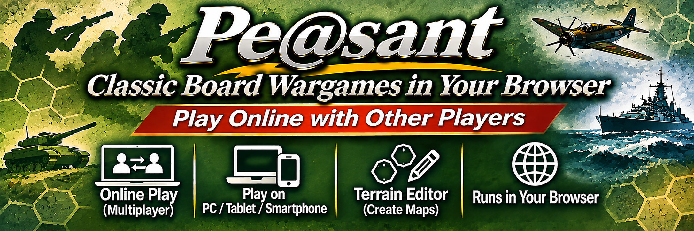

Operations HQ

I’ve made a new app called Pe@sant. Think of it as a VASSAL-like tabletop that runs in your browser, even on a smartphone. It includes a simple tool for converting VASSAL modules into Pe@sant’s Parcel format, along with a terrain editor for adding the map data that more advanced features need.
Pe@sant is designed to make it easier to ask an AI to write JavaScript extensions. The idea is to combine those scripts with terrain data to do things like highlight where a unit can move or automatically resolve combat.
Note: AI tuning and bug fixing are not finished. The new features are at a playable level for now.
You may run into bugs. If you find one, please let us know: gbgty203@yahoo.co.jp
About me: I'm a 60-year-old wargamer in Japan. I have no one to play against, so I made this site to play the wargames I miss, at least against an AI. I made it public in case there are other gamers like me somewhere in the world.
Today's Updates
November 28 — New home page and game links
- The English home page and all 11 games listed here have new URLs. Please update your bookmarks.
November 27 — B-17 gun assignments
- Switching between enemy fighters in the same attack round keeps your gun assignments visible. Each assigned gun shows its target and whether it can be reassigned to the selected fighter.
News & Updates
November 26 — War at Sea
- When playing the Allies, choose which British ships start Turn 1 in Malta and which start in England. British reinforcements still enter in England, as required by rule 4.3. Thanks to Chuck Baker for pointing this out.
- In the Return phase, choose Malta or England for each British ship returning from the Mediterranean. Ships forced to return by a disable result go to Malta.
- Updated the German AI for games played as the Allies.
November 25 — Up Front Challenge Mode
- Open the Scenario Editor and choose Challenge. Pick a year and build your attacking force for Scenario A, Patrol. You can choose several soldiers of the same type.
- The AI's budget is your force's DYO cost multiplied by the setting you choose, such as 1.3×. It builds a defending force for the same year and brings weapons to counter your vehicles if you field any. Its nation and roster are revealed when you start the game.
- Added the contributed scenarios Infantry's Iron Fist, Block Clearing, and Armored Advance. Their setup lets you choose one or two German Panzerfausts. Fixed a freeze when the AI Order was changed from its default.
I haven't playtested Challenge Mode through a full game yet. If you run into a bug, please let me know.
November 24 — Gulf Wars and Stalingrad
- Gulf Wars — Published Japanese and English editions. The English game includes a how-to-play guide, English card descriptions, and a prestige chart.
- Gulf Wars rules — Updated diplomacy rolls, wartime reinforcements, attacks on Israel, and coalition responses. Leader succession now preserves prestige from minor-state alliances, annexations, and nuclear weapons.
- Gulf Wars interface — Redrew the map, added nuclear plant and weapon markers, moved the hand below the board, and combined AI actions and turn advancement into one button. Discarding refills the hand and advances the turn.
- Stalingrad — Added replenishment and event commands and support for events during operations.
November 23 — Game updates
- B-17 — Completed the English flight messages and language access.
- Patton’s Best — Added JSON campaign export and import, and let players open saved battle logs inside the game.
- Bismarck — Separated the search and combat phases. Graf Spee now resolves detection after all carrier searches have been plotted.
- Stalingrad — The Soviet AI builds its Guards to four steps before counterattacking.
- Bulge AI — Limited Allied movement to decisive attacks on German armor.
- Professional Baseball 2026 — Requires valid lineups and keeps warnings visible for unavailable starters.
November 22 — B-17 and Patton’s Best
- B-17 — Updated flight startup to address stalls during briefing or the first move. If the flight script fails to initialize, the mission controls stay disabled and the Debug log identifies the failed script, with the line and column when available. Automated tests reached Zone 2 in Japanese and English.
- Patton’s Best — Load saved game is always visible on the start screen. It resumes your existing autosave in the same browser and tells you when there is no saved game.
November 21 — Italian and French forces in Up Front
- Choose Italy or France for either side in the Scenario Editor. Each nation has 35 cards, including infantry, guns, and vehicles.
- Added national rules for hand size, discards, and squad break, plus Italian surrender and the option to fire either of the Char B1’s two guns. Custom scenarios can also configure artillery support and partisans.
November 21 — Up Front AI deployment
- In built-in and custom scenarios, the AI uses the victory conditions to size its maneuver group. If the objective calls for five soldiers, it assigns at least five to that group when enough soldiers are available.
- In custom scenarios with vehicles, the AI forms separate maneuver and fire groups when the roster allows it. Each vehicle occupies its own group.
November 21 — Patton’s Best
- Counterattack orders now tell you where to hold. The battle log records whether the enemy attacks each time you wait 15 minutes.
- The after-action report opens automatically at the end of an operation, including when the last battle ends at sunset.
- The game automatically downloads a dated text file containing that operation’s battle log.
November 21 — Up Front
- Groups in a Gully and groups on a Hill can fire at one another at any relative range their weapons allow.
- Two ordnance weapons in the same group can fire at the same target as one action. Each weapon uses its own Fire card and resolves its own shot, even if the first weapon misses.
- When an eligible defender is overrun, the player can choose whether to counterattack with an anti-tank magnetic mine (ATMM).
- Reinforcements enter at range chit 0 with a regular Movement card. A Flank Movement card lets them enter up to the highest range chit their side held at the start of the turn. Flanking Fire applies when its conditions are met.
- Wire, Smoke, and Open Ground cards cannot be played during initial terrain placement.
- Use “Show opponent’s discards face up” to switch the opponent’s discarded cards between their fronts and backs.
November 20 — B-17 save files and gun assignments
- Use SAVE and LOAD in Mission Controls to download your progress as a JSON file and resume from it later. The file includes gun assignments you have already made during combat.
- Assigned gun buttons are highlighted and marked with a check mark. The assignment list stays visible when you switch targets, and you can clear or change assignments until you resolve fire.
November 20 — B-17 and Up Front
- B-17 — The mission debrief now confirms when the aircraft landed at base, even if it was written off afterward. Revised the English crew dialogue and translated remaining Japanese text in roll logs and mission reports.
- Up Front — Translated Exchange Weapons, Reorder Group, the AFV controls and vehicle status, and the loss-limit note in the victory conditions panel. Added English labels for ordnance fire, AFV smoke, radio support and repair, reinforcements, and other actions.
November 19 — B-17 mission start fix
- Fixed two JavaScript syntax errors involving the radio room and flight engineer that could prevent a mission from starting in the English version.
- Verified that a mission can start and the aircraft can take off in the updated English version.
November 19 — War at Sea
- After assigning sorties and reserving ships for repairs, the Axis AI sends the remaining available surface ships in Germany to the Baltic, beyond the reach of Allied land-based aircraft. If Allied ships occupy the Baltic, the AI looks for another safe adjacent sea area.
- Ships that attempt to move cannot repair that turn, even if they return to port after a failed speed roll. This applies to players and the AI.
November 18–19, 2026
Up Front scenario editor and setup
- Use the scenario editor to build both forces, combine victory conditions, and select special rules from the available presets.
- Set day or night, year, points, and the deck limit. The year filters cards with a recorded availability date, and reinforcements count toward the point limit.
- Switch between the two forces with tabs. The selected cards appear in numerical order in the preview. Shift-click a card to enlarge it.
- The force picker includes vehicles and infantry guns. The general 2–40 card requirement in the editor was removed.
- Select reinforcements for each side and set the first deck in which they can enter. Bring available reinforcements onto the field with Movement.
- Set how many copies of a terrain card are removed when drawn, including cards drawn for a check. Remaining copies of that terrain can then be played.
- Choose Cower cards separately for the attacker and defender.
- Select equipment below the force cards. Options include demolition charges, Panzerfausts, magnetic anti-tank mines, and radios.
- Demolition charges and radios use national artwork. The equipment previews also show Panzerfaust and mine images.
- Assign equipment carriers during group setup. The AI assigns carriers for its own force.
- Download a scenario as a JSON file and reopen it in the editor. Scenarios previously saved in the browser can still be opened and exported.
- Use the start screen’s Load button to open a scenario file and go into group setup or resume a saved game.
- Open Scenario Details in group setup to review victory conditions, special rules, reinforcements, day or night, and the time limit.
- The editor and setup details are available in English and Italian. The browser remembers the editor unlock.
- The standalone Surprise Attack entry was removed from the new-game menu.
Up Front cards, turns, and terrain
- Split Action cards shade the faces unavailable to the current nation. When both faces are legal, choose which face to play.
- A fully unavailable split card can still be placed face down as Open Ground under the Cower rules. Playing or discarding either face uses the whole physical card.
- A night restriction on a Smoke face leaves the other face usable where allowed. Reloading a saved hand restores the national faces, and checks still use the original printed values.
- Choose how many cards to draw at the end of a turn, from zero to the hand limit. The hand refill control now fits on one line.
- The draw pile display shows the deck cycle while hiding the number of cards remaining in the pile.
- Players and the AI declare multiple discard attacks and their targets before resolving them. Sniper checks draw a card when the attack resolves.
- An attack already underway resolves when it draws the final card. Drawing the final card during end-of-turn refill ends play without starting another turn.
- Movement and observation now account for gullies, hills, marsh, and streams. A failed stream crossing applies the morale rules and clears weapons left behind.
- Flanking and encirclement account for sideways movement and successful stream crossings. The first sideways movement in marsh cannot establish a flank.
- When a breeze clears Smoke, later fire uses the updated defense modifier.
- Groups must be adjacent and at the same range to start a transfer. Eligible riflemen can fire with either group during the transfer, and a pin can interrupt it.
- Transfer and position checks keep range consistent. Crew members must leave their crew before transferring. A sideways group swap checks both Movement cards and any stream crossing first.
- At night, starshell illumination follows a moving target. Retreat and overrun checks use night observation.
Up Front weapons, vehicles, and AI
- Group setup uses consecutive groups A through D and keeps each vehicle in a separate group. Crew assistants are placed next to their gunners.
- Pinned soldiers can change position where allowed. Crew weapons check the status of the actual assistant when firing.
- Vehicle and infantry gun cards use their registered stats for movement and attacks. Crew exposure, buttoning up, and sniper attacks against exposed crews use the vehicle rules.
- A direct hit on a hull-down vehicle causes stun. Stun recovery uses its own Rally values.
- An overrun checks the terrain for bogging, including Wire. Encirclement affects panic checks for pinned troops in an overrun.
- Eligible American, German, and British armored vehicles can fire Smoke as their action.
- Ordnance resolves accuracy and effect separately. The combat display brings the drawn judgment card to the front when showing the shot result.
- Moving ordnance at night checks black random numbers and uses a hit number reduced by one.
- Infantry guns and anti-tank rifles use separate target, support, and Concealment rules. A mortar attack ends if its only participating tube malfunctions.
- An infiltrating soldier can leave a flamethrower or other secondary weapon behind. The equipment stays there if the attempt fails.
- Close combat accounts for infiltrator positions and cover. A Hero retry against a vehicle keeps its Hero effect.
- The defender can take prisoners in close combat. Prisoner handling now covers guard reassignment and release.
- Demolition charges can be used against vehicles in close combat. The defense checks the support of adjacent vehicles individually.
- Wounded soldiers can choose between eligible primary and secondary weapons. Equipment transfers and wound checks follow the receiving soldier’s status and the deck cycle.
- Special troop rules cover conscripts, green troops, American airborne troops, and Volksgrenadiers. Partisan Concealment also applies against radio fire.
- Infantry reinforcements can enter with River or Marsh where allowed. Vehicle reinforcements check their separate terrain restrictions.
- The AI uses legal split-card faces, checks crossings during flanking, and avoids starting ordnance or support fire after declaring discard attacks.
B-17 Sortie Control
- Play B-17 in English. The interface, mission controls, crew screens, and mission reports are available in English. Some detailed logs and dialogue are still in Japanese.
- The Japanese and English homepages now link to their respective language versions.
PFB
- Play results appear on the stadium backscreen. The scoreboard keeps showing the score.
- Semi-auto play hands control back to you when a runner reaches base or play calls for a tactical decision. Use Resume to restart semi-auto play.
- Select your starting pitcher on the pennant schedule. If that pitcher is unavailable, the game selects an eligible replacement and prepares the bullpen for the scheduled game.
- The pennant mode downloads a season JSON after your team’s games.
Battle of the Bulge
- Players on the same device can control both armies. Review and change staged moves and attacks before confirming them.
- During the German player’s support placement phase, place support chits manually and confirm or undo the placements.
Walcheren 1944
- Published the original postcard game in Japanese, English, French, German, Italian, Spanish, Simplified Chinese, Korean, and Russian.
- The homepage shows the nine language flags, and the game now records site visits.
Corvette Command
- The campaign epilogue now unfolds in yearly reports and ends with the ship’s fate. The final escort also has its own narration.
2026-11-17
- Up Front — Groups in a gully can now use regular fire against enemies at Relative Range 5, including adjacent groups.
- Up Front — After Concealment is applied, the attacker can review the final Fire Strength and decide whether to resolve the attack. Calling it off still uses the played Fire cards and the group’s action.
- Up Front — When the only weapon able to fire at that range malfunctions, the remaining defenders are skipped and no further RNCs are drawn for the attack.
- Up Front — In scenarios A–E, the specified terrain is unavailable for placement until the required number of cards has been removed. The deck display now shows how many cards have been removed.
2026-11-15
- War at Sea — On turns 1–4, the German AI checks both total strength and average gunnery per ship before committing its main fleet to an attack.
- War at Sea — The Allied AI now aims to split its strength roughly 30% to the North Sea, 30% to the Barents Sea, 25% to the South Atlantic, and 15% to the North Atlantic. Fixed a convoy check that could halt Allied AI movement from turn 3.
- Up Front — Fixed sniper fire. The game checks the RNC number against the Sniper card’s printed PIN and KIA ranges regardless of color, and applies the PIN result correctly.
- Up Front — Corrected firepower and to-hit values across all five nations.
- Up Front — Fixed incorrect assistant assignments in AI groups.
- Up Front — Fixed the firepower shown for each target and placed the final fire strength beside the cards.
- Up Front — Added distinct scouting and starshell icons, with a countdown for starshells.
- Up Front — Improved AI scouting to account for terrain and firing options.
- Up Front — Applied the same passing rule to both sides and made AI discard counts visible.
- Up Front — Improved how the AI evaluates certain terrain cards.
- Up Front — Fixed an issue where the AI repeatedly played sideways movement cards on the same group.
- Up Front — Fixed gully movement. The first Movement card can advance or retreat as well as move sideways. A group leaves the gully when it plays a second Movement card or a new Terrain card.
- Up Front — Fixed firing from marshes and streams. The terrain penalty of −1 now applies only to the attack’s Fire Strength, so it no longer stops eligible groups from playing Fire cards.
- Up Front — The AI now tries firing at the group it infiltrated when close combat is unfavorable.
- Up Front — Campaign battle reports can now be saved from the results screen.
- War at Sea — The Allied player can now choose where to send land-based air. Ships leaving Russia are listed under Russia, and the move to the Barents Sea requires no speed roll. Thanks for the report, Chuck.
- War at Sea — Only one convoy can occupy a sea area. A convoy can move from the North Atlantic to the Barents Sea on its second turn at sea and is removed from play once delivered. The German AI now sends ships out of France on turn six before the port closes.
- Panzer Grenadier — Added online play by invitation. You can undo an individual unit’s AI move and move it yourself, set a destination for future turns, or order a unit to hold a hex.
- Panzer Grenadier — The AI now uses indirect fire on its own. Corrected morale recovery, restored the option to return fire after a preemptive shot, and added end-of-game results for breakthrough and occupation scenarios.
2026-11-14
- Patton’s Best — Fixed a bug that carried the Sherman’s hull and turret facings over from the previous battle. Both now face forward at the start of each new battle.
- Corvette Command — Added two Hedgehog options: hold fire once or hold fire for the rest of the current sea area.
- Patton’s Best — Opened a battle reports room with the Avranches report in Japanese and English.
2026-11-11
- Wooden Ships & Iron Men — Added a two-player mode for taking turns on the same device and improved the battle interface.
- War at Sea — Choose your side on the start screen. Select the Allies to command the British fleet. This is a trial feature, and the German AI is still being tuned.
- Rogue — Now available in nine languages.
- Up Front — Added an Italian version of the manual.
- Patton’s Best — Now listed on this page. Some rules and combat checks still need testing. If you spot a missing check or unexpected result, please tell me what happened and at what point in the game.
Planned Updates
Online play between two human players is planned for War at Sea and Wooden Ships & Iron Men.
2026-11-09
- Wooden Ships & Iron Men: action report
- When a battle ends, an action report is saved automatically as a web page you can open in your browser
- The map shows each ship's track by turn, an arrow with a number for every broadside, and marks for boarding, striking, capture and sinking
- Below the map: every broadside and boarding in order, then the final result with each ship's damage
- The new "📜 Report" button in the bar at the bottom of the battle screen saves the report at any time, for example when a game cannot be finished
- If you find a bug, please send us the report. It also contains the records we need to reproduce the problem. How to get it:
- Right after the bug happens, press "📜 Report" in the bar at the bottom of the battle screen (next to "💾 Save")
- Your browser saves a file named like
wsim_report_Sc10_T9_….html to your Downloads folder
- Attach that file to an email to gbgty203@yahoo.co.jp and tell us briefly what went wrong
Please press the button before reloading the page; reloading clears part of the records
- Reports you send us will be published on the new "Wooden Ships & Iron Men Battle Reports" page, so everyone can see them. If you do not want your report published, please say so in your email
- Available in English, Deutsch, Français, Español and Japanese
- Wooden Ships & Iron Men: bug fixes (thanks, Andrew)
- "Execute plots" can now be pressed only once per turn. Before, pressing it again moved only your ship while the AI ship stood still, giving free stern rakes
- AI vs AI: both sides now set their boarding parties, so a ship no longer boards with zero men
- The game no longer goes on after the battle has ended
- AI ships no longer try turns that swing their stern into another ship, which could leave two friendly ships stuck for several turns
- A ship that has lost its boarders earlier in the same melee phase no longer boards with zero men
- Scenario B-18 "A Ship of War" is temporarily unavailable. With so many ships, AI ships can get stuck. It will come back after it is fixed
- War at Sea: bug fixes (thanks, Chuck)
- German oilers (16.1): a ship that refuels at sea successfully now stays at sea. Before, it went back to its home port anyway
- 17.1: every ship disabled in the South Atlantic, British ships included, now goes to the Neutral port. The Allied AI takes British ships out of the Neutral port the next turn
- Corvette Command: simpler display options. "Hide the dice", "Hide routine lines" and "Story mode" are now one option, "Show everything". Off: the story only. On: the story plus every check (A/P and rolls) and every routine line
- Site: the visitor counter now records the Japanese-named game folders (War at Sea, Up Front, Wooden Ships & Iron Men, Donkey Command) with readable names instead of long codes. The games themselves and their addresses are unchanged
2026-11-08
- Corvette Command: smartphone support
- The "Start the game" button at the bottom of the first Options screen was hidden behind the browser's toolbar and could not be pressed. It now fits on the screen
- On phones, the ship status, the convoy and map, and the U-boat are now shown one above the other in a single column (portrait and landscape)
- The PC layout is unchanged
- War at Sea: fixes from Chuck's report (thanks, Chuck)
- Italian cruisers can now go only where the rules allow: the Mediterranean, South Atlantic and North Atlantic, and the ports of Italy, France and the Neutral port (15.5, 15.6). Before, they could enter the North Sea and then return to Germany
- Italian ships disabled in the South Atlantic now go to the Neutral port (17.1)
- The Texas counter picture now shows 4-4-3. Only the picture was wrong; the game already used 4-4-3
- Up Front: the AI has been rebuilt for all nations
- The AI now follows the author's own command chart: one order of priorities for advancing and one for holding
- The random AI personality (aggressive / balanced / defensive) has been removed
- Vehicles now follow the rules for overruns and close assaults. A Demolition Charge now correctly adds +4 in a close assault on a vehicle (this also applies to players)
- Scenario C: the defending AI no longer leaves good terrain without reason, and falls back when the enemy comes too close
- Scenario D: the victory check now works correctly when the player is the defender
- Up Front: Italian version
- The language button now switches Japanese → English → Italiano. You can also open it with ?lang=it
- The Italian text was translated by an AI. Corrections are welcome
- War at Sea: suggestions from Steve (thanks, Steve)
- Turn 8 is the last turn, so there are no repairs in turn 8
- In turn 8, if Axis ships are still in port when you end the Axis movement phase, the game asks you to confirm before going on
- New "Edit German ships" button on the start screen: uncheck German surface ships to leave them out of the game (a handicap, for example the Graf Zeppelin). All ships are checked by default. U-boats cannot be removed
- War at Sea: the Allied AI fleet deployment has been rebuilt
- For each sea area, the AI adds up the German surface ships that can reach it this turn (based on current sea control), plus 5. If Italian 1-1-7 cruisers can also come, their strength +2 is added. It sends at least that much to the Barents Sea, North Sea, South Atlantic and North Atlantic, in that order, and splits the rest evenly
- Fast ships go to the Barents Sea first; slow ships go to the North Sea and the Atlantic
- No Allied ships in the North Atlantic on turns 1 and 2. From turn 4, the US ships' strength is counted for the North Atlantic
- British ships in Russia are now used too, and can move through the Barents Sea to the North Sea or North Atlantic
- The Mediterranean is used only when the Soviet fleet sails and no convoy is at sea. British ships always return to England from the Mediterranean
- Allied land based air attacks now target Italian 1-1-7 cruisers first, then German 1-2-7 cruisers, then the weakest ship in an area with at least 3 Axis ships
- Allied surface fire now targets German ships before Italian ships in every turn
2026-11-07
- War at Sea: the map now shows each sea area's strength under its control marker, for example "Allies Atk 8 Air 2 ASW 9" and "Axis Atk 12 U 3" (Atk = surface gunnery, Air = carrier airstrike, ASW = anti-submarine dice, U = U-boats). You no longer need to open the stacks to compare. If the numbers hide the counters under them, turn them off with the "Strength ON / OFF" button at the top (your choice is remembered)
- War at Sea: the "Undo one target" button is now shown from the first ship when choosing targets (greyed out until there is a target to undo)
- War at Sea: shots at a ship that is already certain to sink this round are skipped, with a line in the combat log. The result is the same, just faster
- War at Sea: the choice to play the Allies is hidden for now, until it is ready. You play Germany (Axis) against the British AI
- War at Sea: the "End Turn" button can now be pressed only in the last phase (POC). Before, pressing it early skipped sea control and POC for that turn (thanks, Chuck)
- War at Sea: with the "Fast Mediterranean fleet" strategy, the British now hold the Mediterranean. The Malta fleet is no longer sent home to England, and it sorties every turn unless it is clearly weaker than the Italian fleet (less than 70% of its strength)
- War at Sea: on turns 1 to 4, British gunnery now shoots at German ships first (easiest to sink first), and at Italian ships only after that. Undamaged German ships get +1 on their gunnery dice, so they are the most dangerous early in the game. From turn 5, the easiest ship is shot first, whatever its nation. In Steve's South Atlantic example, four battleships now fire two each at Hipper and Blucher (thanks again, Steve)
- Corvette Command: the convoy can now move freely in Canadian waters and the Air Gap (rule 2.1.1), not just along the shortest path. You can swing north to cross the Air Gap in fewer squares, or step aside from danger. The arrowed routes in the Western Approaches are still fixed. Each choice shows how many squares are left to the destination
- Corvette Command: a new choice below "0 (don't drop · keep them)" in the depth charge attack: "Always 0 in this square (automatic)". While the convoy is in that square, no depth charges are dropped and you are not asked again. The U-boat's rolls go on as usual. You are asked again in the next square
- Wooden Ships & Iron Men: now in French and Spanish too (日本語 / English / Deutsch / Français / Español). Choose the language with the 🌐 buttons on the scenario screen. The manual is also in French and Spanish. The new translations were made by the AI and have not yet been checked by native speakers, so corrections are welcome
- War at Sea: the ship list for each area now shows the total Allied ASW dice in its title (carriers and convoys 3, other ships 1), and the Close button is now at the top right (thanks, Steve)
- War at Sea: British gunnery now aims to sink ships. It shoots first at the Axis ship that is easiest to sink, and assigns ships until there is about a 45% chance of sinking it, then moves on to the next ship: 4 gunnery factors (one 4-4-x battleship) for an undamaged Italian 1-1-7, 5 for Hipper or Scheer, about 12 for Scharnhorst and 17 for Bismarck, fewer for damaged ships. Ships left over go one each to the next easiest targets, so fire is spread instead of piled on one ship. (Changed later the same day from an 80% line after Steve's report: against four Italian cruisers, four battleships now fire one each instead of three on one cruiser and one on Scharnhorst. Thanks, Steve. This line may still change.)
- War at Sea: the British AI now pursues whenever it has about a 45% chance to sink a retreating ship, even when outgunned, and keeps pursuing while that is still true
- War at Sea: a convoy in the North Atlantic now stops in England for +1 POC instead of going on to the Barents Sea when the British expect to be weaker than the Germans there (up to twice per game), or when the Axis controls the Barents Sea
- War at Sea: Barents Sea map note: British ships there return to England on turns 1 and 2, and to Russia from turn 3, damaged or not (thanks, Chuck)
- War at Sea: the Axis return screen now shows all port buttons from the start and highlights the one chosen
- War at Sea: the British AI no longer sends convoys from the USA without an escort before turn 7
- War at Sea: British ships at Malta stay in port when the Italian fleet is stronger. When they return, only the ships needed against the Italian fleet stay at Malta, and fast ships go back to England
- War at Sea: British AI deployment: the North Sea and the Barents Sea get up to 1.25 times the German strength that can reach them, and the rest goes to the Atlantic. Areas only U-boats can reach get a carrier first
2026-11-06
- Up Front: Scenario E is now open, with more vehicle rules, and the AI now plays to each scenario's victory conditions
- War at Sea: a new British AI, plus rule fixes (pursuit, POC, carrier airstrikes, Italian cruisers, convoys)
- Wooden Ships & Iron Men: much clearer gunnery and melee results, reload help, a sail-order fix and a Center button
- Wooden Ships & Iron Men: 5 new Bolitho scenarios (B-1, B-8, B-9, B-12, B-18), and the AI now compares guns and crew each turn to choose between gunnery and boarding
- Corvette Command: new introduction and thanks to Bonsai Games
Earlier Updates
2026-11-05
- War at Sea: speed rolls for 2-area moves are now made at the end of the movement phase, after all ships have moved
- War at Sea: convoys now fire in every round of surface combat
- War at Sea: the neutral port penalty (1 POC per ship) is now applied at the start of the repair phase
- War at Sea: the U-boat limit of 7 now counts only U-boats that have arrived, so later reinforcements replace losses
- War at Sea: the Italian fleet takeover on turn 8 now happens unless the Axis held the Mediterranean for 4 turns in a row
- War at Sea: refueled German ships move to adjacent areas freely, and 2 areas with a speed roll
- War at Sea: a ship that fails a 2-area move now returns to its original port or a port next to its target area
- War at Sea: the British AI is improved
- War at Sea: ships still in France at the start of turn 7 are removed, with a message
- War at Sea: returning to France on turn 6 shows a warning: the ship can return, but it is removed next turn
- War at Sea: now in 9 languages (Japanese, English, French, German, Italian, Spanish, Chinese, Korean, Russian)
- Up Front: Scenario E (armored recon) added
- Up Front: demolition charges are now set per scenario, one per squad
- Up Front: a vehicle can be placed alone in a group
2026-11-04: Up Front (AI)
- Every nation now splits into movement groups and a fire group in the center
- The squad leader and high-morale men go with the movement group
- Flamethrowers fire first at range 5, and defensive terrain no longer reduces their attack
- Demolition charges go to eligible men in a movement group, who infiltrate first; pillboxes are targeted first
- At night the AI puts movement first: fire groups close to range 3, and groups observe only when they intend to attack
- The AI digs in only when its hand is ready, and otherwise replaces cards